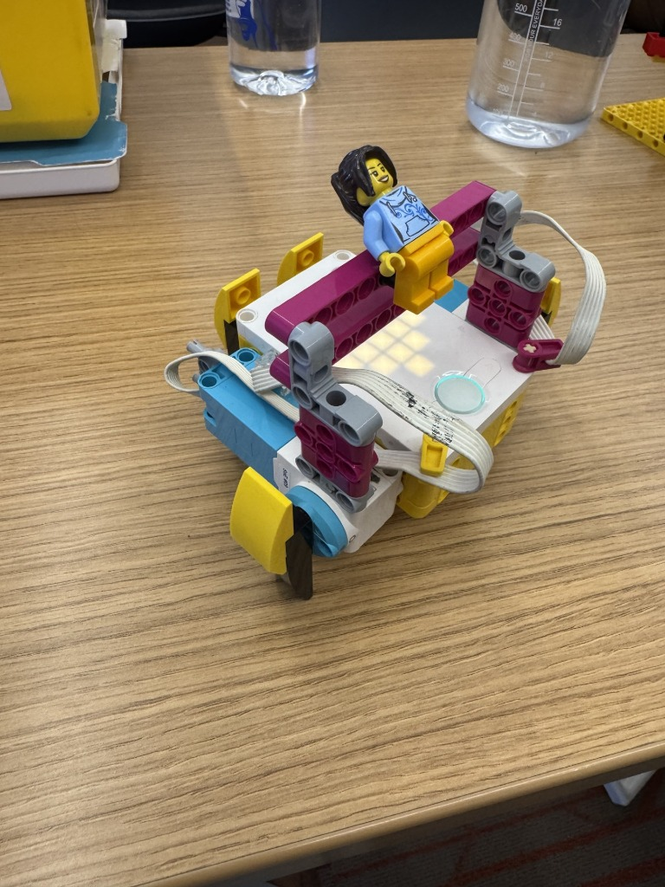

This project challenged us by asking to make something that walked or moved. However, the catch here was that no wheels were allowed. This was a fun experiment to help us get more familiar with the LEGO Spike Prime Kit while challenging us mentally.